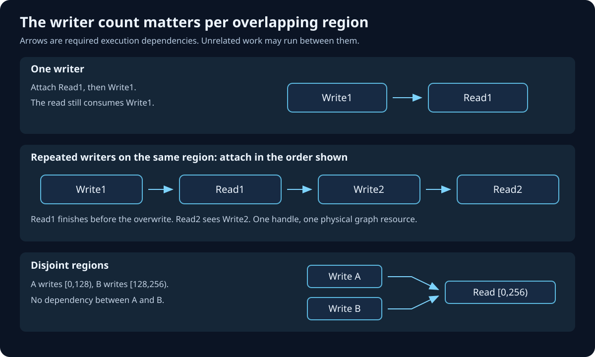

Persistent dependency graphs
Resource handles and storage
Declare logical resources and access ranges before physical allocation.
Learning objectives
Predict which write a read observes, distinguish logical ordering from physical allocation, understand imported entry states and assess accounted storage. Start with the dependency model.
Logical resources
Node authors declare outputs in DeclareResources; application code receives typed values from an operation's GetBuffer / GetTexture. Use AllocateBuffer / AllocateTexture to declare owned values and BindBuffer / BindTexture to import existing storage through the edit scope. Resolve native objects only inside declared execution callbacks. Usage, ownership and producer coverage are validated.
Reads and repeated writes
Each access declares a handle, read/write intent, RHI state and byte or texture-subresource range. The compiler applies ordering separately to each overlapping region. With one producing node, readers depend on that producer regardless of attachment order. With two or more distinct writer nodes, overlapping write/write, write/read and read/write hazards follow the nodes' original successful attachment order. A read then observes the preceding writer. Read-only nodes need no edge between each other.
Graph-owned reads require initialized coverage over their entire range. In a region with repeated writes, a read before the first writer fails even if a later writer exists. Imported storage may supply those initial contents. ReadWrite consumes the incoming contents and produces updated contents in one node; its own write cannot initialize its input. Different nodes writing disjoint regions remain independent, and a read spanning several regions depends on the appropriate producer of each. See the bindless range example.

Write, read, write, read
Attach four nodes on the same buffer range in this order: Write1, Read1, Write2, Read2. Read1 consumes the contents from Write1; the read must finish before Write2 overwrites them. Read2 consumes Write2's contents. Compilation preserves Write1 → Read1 → Write2 → Read2 while allowing unrelated work to move around the chain. All four nodes resolve the same physical graph resource within that frame slot. No extra resource, copy or allocation is introduced for the second write.
Use distinct output handles when an older value must remain available after an overwrite. That gives the planner separate lifetimes which it may alias only when safe. Multiple writes to one handle do not create implicit versions or preserve old contents.
Each operation call records a distinct node in construction order. Edit.Order(Producer, Consumer) adds constraints for effects without a resource dependency, but an edge such as Write2 → Read1 contradicts this chain and makes compilation fail with a cycle. To change the next frame, record its desired operations and omit unwanted work.
Imports and outputs
Import APIs require a stable nonempty slot name and retain RHI storage. DeclareExternalBuffer, DeclareExternalTexture and DeclareExternalAccelerationStructure can instead declare the expected shape without a native object. Archives retain these named placeholders, and BindExternalResource supplies a compatible object after loading. External inputs need no producer; an in-place update uses ReadWrite when it consumes existing contents. Repeated writers follow the same region ordering as owned storage. Import each native resource once and reuse its handle: another wrapper with the same physical identity is rejected, so duplicate imports cannot provide implicit versions.
Imports enter and leave on graphics. During first-submission materialization, a read-only state query snapshots each used imported texture’s current uniform facade/native entry state, rather than its creation descriptor. Initialize textures or acquire swap-chain images first: Unknown, Discard and nonuniform entry states are rejected. Restore the captured state before every subsequent submission. Imported buffers still use descriptor initial state, with Unknown treated as Common. Edit.Keep(Resource) makes owned values observable; EArdaGraphResourceLifetime::Persistent retains storage across executions but does not by itself initialize a read. Shared storage conservatively orders frames.
Physical planning
CompileAndWait() publishes or reuses the accepted logical memory plan without creating graph-owned GPU buffers or textures. Native allocation queries can still determine sizes and alignment. Compatible values may share storage when GPU dependencies prove non-overlapping lifetimes. Memory scheduling may add ordering to permit reuse. The first SubmitAndWait() leases physical storage, prepares pipelines and bindings, and lowers the command program. Alias barriers and ownership transfers activate placements during execution. A preparation failure publishes no frame and leaves the pending plan available for retry; previously created objects may remain in backend caches.

Accounted memory
mMaxVramBytes covers graph allocations, frame pools, imports, persistent storage and declared workspaces. Imports may retain an entire heap. mTransientWorkspaceBytes requests scratch exposed by GetWorkspaceBuffer(). mAllocatedBytes reports the accepted plan size even before first submission; it does not prove that native storage has been allocated. Driver-internal CUDA executable storage and undeclared external allocations are excluded.
Texture-buffer transfers
FArdaGraphTextureToBufferNode and FArdaGraphBufferToTextureNode declare explicit graphics-queue copies through CopyTo(Edit, Source, Destination, Slice, Layout) overloads. Their parameters are texture, slice, buffer and layout; the node validates and derives the copy footprint during resource declaration. Buffer offsets use 512-byte alignment and pitches 256-byte alignment. Buffer accesses cover copied texels, excluding padding. Texture hazards cover the selected mip, slice and plane, not individual pixel rectangles. A partial upload preserves surrounding texels and therefore declares a read/write of that subresource. Supply initialized imported storage, or attach a complete subresource writer before the partial upload. Disjoint rectangles within the same subresource still overlap for graph ordering. See CUDA sequences for the shared-buffer interop path.
Tensor views and compiled constants
FArdaRHITensorDesc describes dtype, concrete dimensions, signed element strides and byte origin. FArdaGraphTensor pairs that descriptor with an ordinary graph buffer; it does not create another storage or dependency system. Validate the descriptor against the complete backing allocation, and preserve shared buffer identity when several tensor ports are views of one allocation. The current model compiler exports static contiguous float32 interfaces even though the descriptor can express more layouts.
FArdaGraphPackage::GetTensors() exposes each port's descriptor, package-local mBuffer identity and mStorageByteSize. Allocate that full capacity when binding a port. The model's logical element count alone may omit another output view or compiler padding. Invoke can allocate output storage automatically.
AllocateInitializedBuffer(Edit, Description, Bytes, Name) declares persistent buffer storage with an owned, nonempty initial byte prefix. Attachment and logical compilation do no uploads. Cold physical preparation initializes newly allocated storage before execution; subsequent executions retain its contents. Bytes beyond the supplied prefix still need a producer before reading. The mechanism is general initial data, including pretrained constants, and is serialized in graph archives from version 3 onward.
See portable runtime definitions and model packages for model import and archive limits and remaining work.
Chapter summary
One producer determines its readers independently of attachment order; repeated overlapping writers make attachment order part of the resource's meaning. Repeated writes reuse storage, while separate handles preserve separate values. Native requirements and GPU ordering determine allocation and reuse; callers maintain imported entry contracts.
Check your understanding: which contents does a reader between two writes observe? How does changing the order of operation calls affect that answer? When do you need a separate output handle?
Source and API
Read the developer guide, pipeline guide, public API reference and graph declarations.